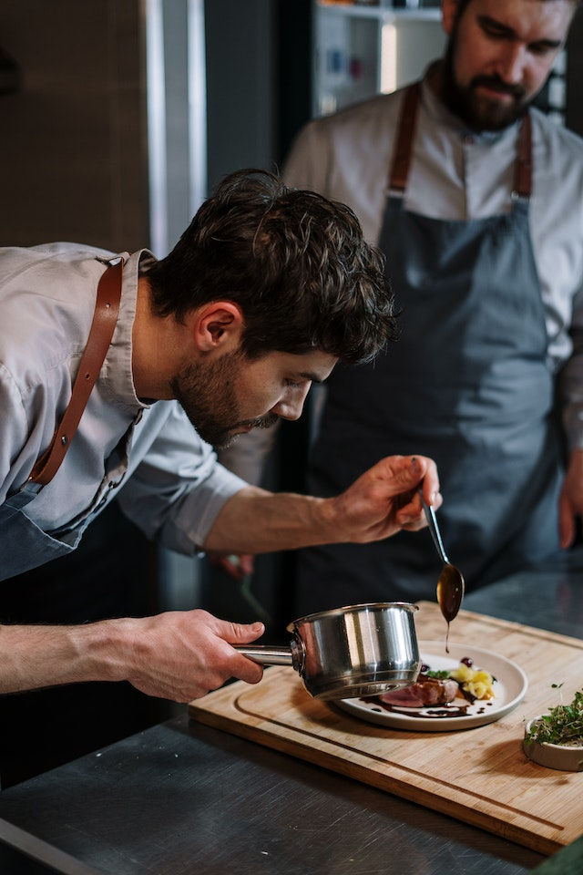
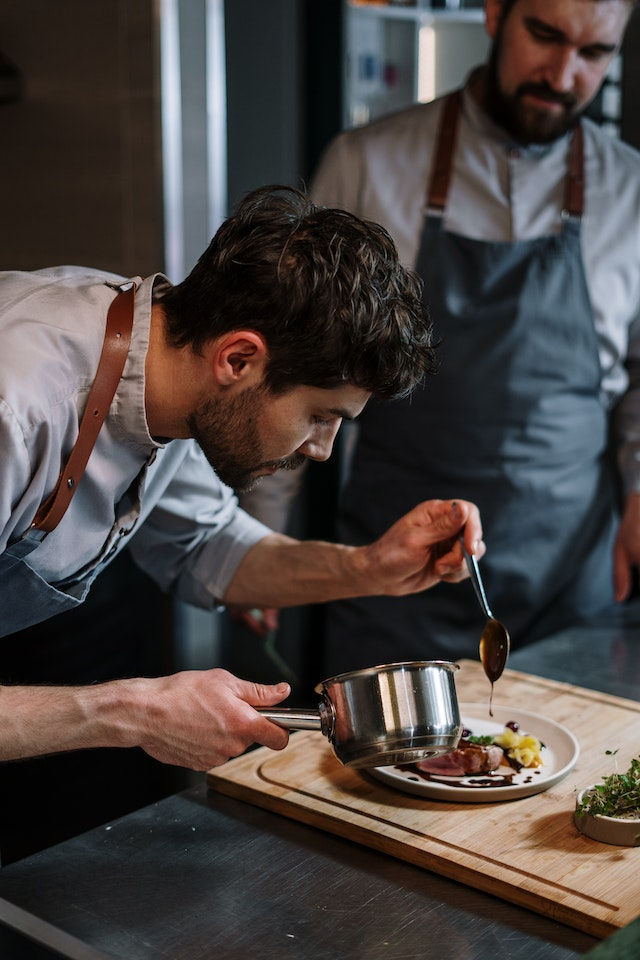

Gourmet club - Le goût infini
GOURMET CLUB - Le goût infini”Actually, the true gourmet, like the true artist, is one of the unhappiest creatures
existent. His trouble comes from so seldom finding what he constantly seeks: perfection.”Ludwig BemelmansDanmark har i
mange år ligget i den absolutte verdenselite i gourmet restauranter.De mange restauranter der er honoreret med
henholdsvis 2 og 3 stjerner i MichelinguidenHar deres egne menuer og personlige præg på den uendelige smag.Hos Gourmet
Club - Le goût infini, skaber vi et miljø som kun er for den sublime gane,og vi inviterer verdens bedste kokke til at
vise deres opfattelse af perfektion.Et medlemskab af Gourmet Club - Le goût infini, vil sikre dig en plads i den mest
eksklusive verdenselite af gourmet.Lad Rasmus Kofoed, chefkokken fra Geranium og flere gange hædret ved Bocuse d’Or,
tilberede dig et måltid der rammer den Nordiske gourmekunst i alt sin glans. Eller Lad René Redzepi som til daglig er
chefkok på restaurant Noma, introducere dig til Efterårets Vildt & Skovsæson. Forvent alle skovens smage, vildt, bær,
svampe og alt den danske natur kan byde på.Vi arrangerer aftenen , vi finder lokalerne, vi sørger for underholdningen,
eller aftenens ta-ler. Du bidrager med dit medlemskab til stemningen, og sammen jagter vi den uendelige smag.


Our team
-

Name Surname
Chef
- 
Name Surname
Chef

Name Surname
Chef
- 